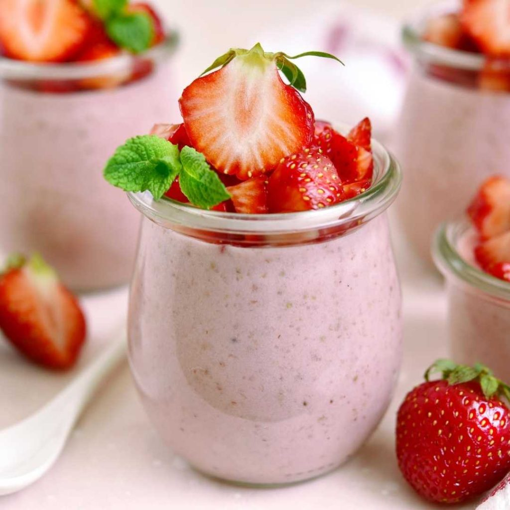
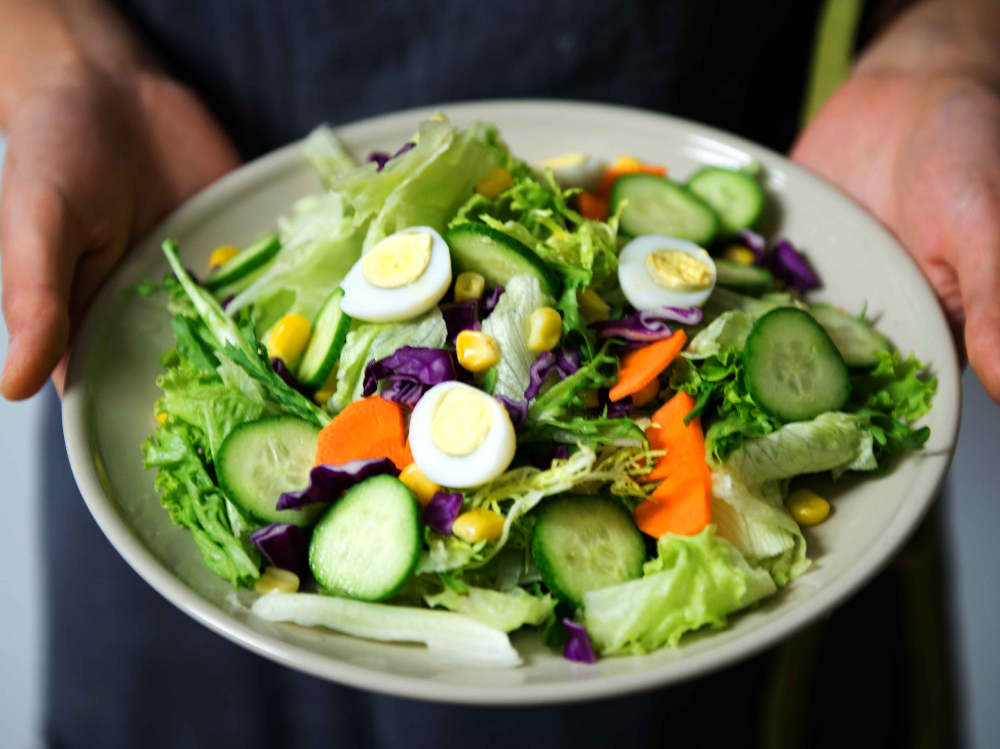
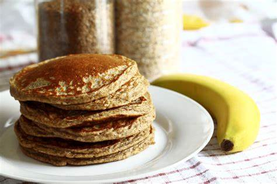

Smoothie de Whey Protein
- 1 scoop de Whey Protein
- 200ml de leite desnatado ou vegetal
- 1 banana
- 1 colher de sopa de manteiga de amendoim
- Gelo a gosto
Bata todos os ingredientes no liquidificador até obter uma mistura homogênea. Perfeito para o pós-treino!
Pão de Queijo com Creatina
- 1 xícara de polvilho azedo
- 1 xícara de queijo parmesão ralado
- 1 ovo
- 2 colheres de sopa de creatina
- 1/2 xícara de leite desnatado
Misture todos os ingredientes até formar uma massa homogênea. Modele em pequenas bolinhas e asse em forno pré-aquecido a 180°C por 20 minutos.

Salada Verde com Ômega 3
- 1 xícara de espinafre
- 1/2 abacate em cubos
- 1 colher de sopa de sementes de chia
- 1 cápsula de óleo de peixe (Ômega 3)
- Suco de 1/2 limão
Abra a cápsula de Ômega 3 e misture com o suco de limão. Regue a salada com o molho e sirva.

Panqueca Proteica com Whey e Creatina
- 1 ovo
- 1 scoop de Whey Protein
- 1 colher de chá de creatina
- 1 colher de sopa de farinha de aveia
- 100ml de leite desnatado
Misture todos os ingredientes até obter uma massa homogênea. Cozinhe em uma frigideira antiaderente por 2-3 minutos de cada lado.